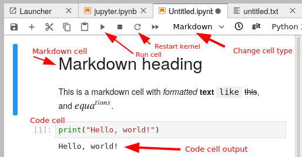

Jupyter
Questions
What is the purpose of a “Computational narrative”?
What role does Jupyter play in development?
When is Jupyter not a good tool?
Objectives
This part will be too easy for some people, and slow for others. Still, we need to take some time to get everyone on the same page.
Be able to use Jupyter to run examples for the rest of the course.
Be able to run Jupyter in a directory do your own work.
You won’t be a Jupyter expert after this, but should be able to do the rest of the course.
What is Jupyter?
Jupyter is a web-based interactive computing system. It is most well known for having the notebook file format and Jupyter Notebook / Jupyter Lab. A notebook format contains both the input and the output of the code along documentation, all interleaved to create what is called a computational narrative.
Jupyter is good for data exploration and interactive work, and making
We use Jupyter a lot in this course because it is a good way that everyone can follow along, and minimizes the differences between operating systems.
Getting started with Jupyter
Start JupyterLab: there are different ways. From the command line, activate your anaconda environment and run
jupyter-lab. You can also start in from Anaconda Navigator.
For practical purposes, JupyterLab is an integrated development environment that combines file browsing, notebooks, and code editing. There are many extensions that let you do whatever you may need.
Here, we see a tour of the JupyterLab interface:

Exercises 1
Exercises: Jupyter-1
Start Jupyter in the directory you want to use for this course.
If you are starting from the navigator, change to the directory you want to use.
If you are starting from the command line, you should navigate to the directory you want to use first.
Create a Python 3 notebook file. Save it. In the next section, you will add stuff to it.
(optional, but will be done in future lessons) Explore the file browser, try making some non-notebook text/py/md files and get used to that.
(optional, advanced) Look at the notebook file in a text editor. How does it work?
If everything works for you, this will end very quickly. You can begin reading the next sections independently.
Running code in Jupyter
A notebook is divided into cells. Each cell has some input, and when it is executed an output appears right below it.
There are different types of cells: primarily code cells and markdown cells. You can switch between them with the menu bar above. Code cells run whatever language your notebook uses. Markdown is a lightweight way of giving style to text - you can check out this reference. For example the previous sentence is:
Markdown is a lightweight way of giving *style* to `text` - you can check out [this reference](https://commonmark.org/help/).

When using keyboard shortcuts, you can switch between edit mode and command mode with Enter and Esc.
You enter code in a cell, and push the run button to run it. There are also some important shortcut keys:
Ctrl-Enter: Run cellShift-Enter: Run cell and select cell belowAlt-Enter: Run cell and insert new cell belowa/b: insert new cell above/belowm/y: markdown cell / code cellx: cut cellc: copy cellv: paste celld, d: delete cell
Now, let’s look at some code samples:
for i in range(3):
print(i)
0
1
2
print(sum(range(5)))
10
By convention, if the last thing in a cell is an object, that object gets printed:
sum(range(5))
sum(range(10))
45
In addition to raw cells, there are magics, which exist outside of Python. They are a property of the runtime itself (in Python’s case, they come from IPython. For example, the following cell magic %%bash turns the cell into a shell script (may not work on all operating systems):
%%bash
for x in $(seq 3) ; do
echo $x
done
1
2
3
A cell magic starts with
%%, goes on the first line of a cell, and applies to the whole cellA line magic starts with
%, goes on any line, and applies to that line.
Exercises 2
Exercises: Jupyter-2
Run some trivial code, such as
print(1).Run some slightly less trivial code, like print out the first ten Fibonacci numbers.
Make a Markdown cell above your code cell and give it a title and some description of your function. Use the reference to add a heading, bullet list, and some (bold, italic, or inline code)
Use the
%%timeitmagic function to time your Fibonacci function.Again using
%%timeit, figure out the fastest way to sum the numbers 0 to 1000000.Once you are done, close your notebooks and other tabs you don’t need. Check the running sessions (hint: thin left sidebar) and shut down these kernels.
Solutions: Jupyter-2
–
Simple fibonacci code
a, b = 0, 1 for i in range(10): print(a) a, b = b, a+b
Markdown description
# Fibonacci * Start with two variables `a` and `b` * Repeat 10 times * Print old `a`, then increment both * Makes use of the Python *tuple assignment*: `a, b = new_a, new_b`
In this case, the print() statements get out of hand, so we comment that out. In general, writing output usually takes a lot of time reletive to the computation, so we don’t want to time that (unless output is the main point of the code, then we do have to time it!
%%timeit a, b = 0, 1 for i in range(10): #print(a) a, b = b, a+b
395 ns ± 10.2 ns per loop (mean ± std. dev. of 7 runs, 1000000 loops each)
–
–
Why Jupyter?
Being able to edit, check, re-edit quickly is great for prototyping and testing new ideas
Tends to be best either at the very beginning (getting started) or data analysis/plotting phases.
You can make a complete story - in one place. No more having code, figures, and description in different places.
Instead of sending plots to your advisor, send plots, the text there, and possibility of checking the code, too.
Notebook as an interactive publication itself - for example the discovery of gravitational waves data is released as a notebook.
Jupyter Notebooks display on Github - low-barrier way to share your analysis.
Teaching - great for getting difficult software distribution out of the way.
Why not Jupyter?
Jupyter is great for many things, but there are some problems if not used well:
They don’t promote modularity, and once you get started in a notebook it can be hard to migrate to modules.
They are difficult to test. There are things to run notebooks as unit tests like nbval, but it’s not perfect.
Notebooks can be version controlled (nbdime helps with that), but there are still limitations.
You can change code after you run it and run code out of order. This can make debugging hard and results irreproducible if you aren’t careful.
Notebooks aren’t named by default and tend to acquire a bunch of unrelated stuff. Be careful with organization!
Once lots of code is in notebooks, it can be hard to change to proper programs that can be scripted.
You can read more about these downsides https://scicomp.aalto.fi/scicomp/jupyter-pitfalls/.
But these downsides aren’t specific to Jupyter! They can easily happen in other sources, too. By studying these, you can make any code better, and find the right balance for what you do.
Exercises 3
Exercises: Jupyter-3
(optional) Discuss the following in groups:
Have any of you used Jupyter in a way that became impossible to maintain: too many files, code all spread out, not able to find your code and run it in the right order. How did you solve that?
On the other hand, what are your successes with Jupyter?
How can you prevent these problems by better development strategies?
See also
The CodeRefinery Jupyter lesson has much more, and the source of some of the content above.
Keypoints
Jupyter is powerful and can be used for interactive work
… but not the end solution when you need to scale up.